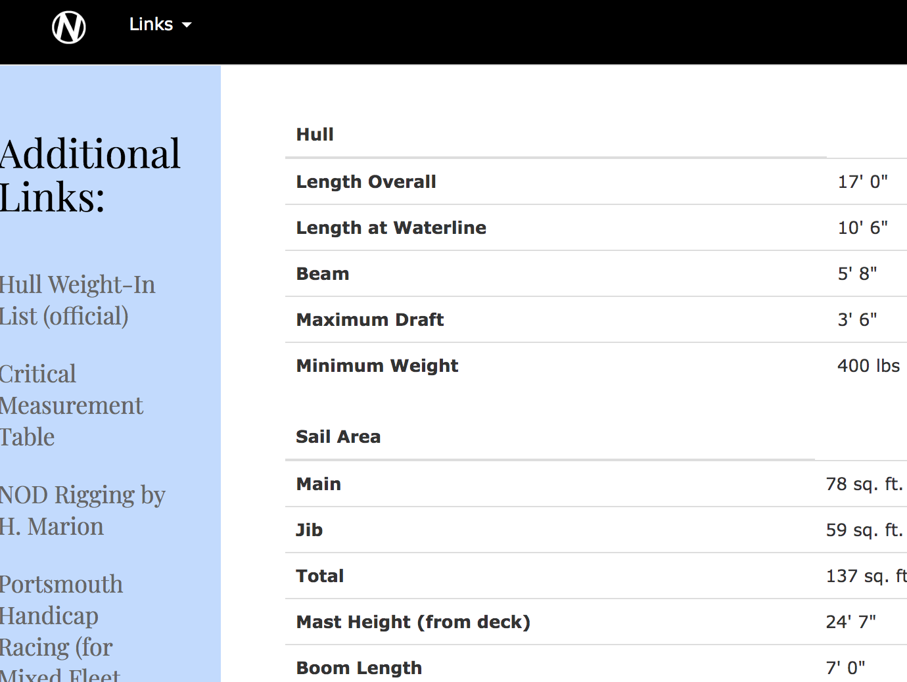
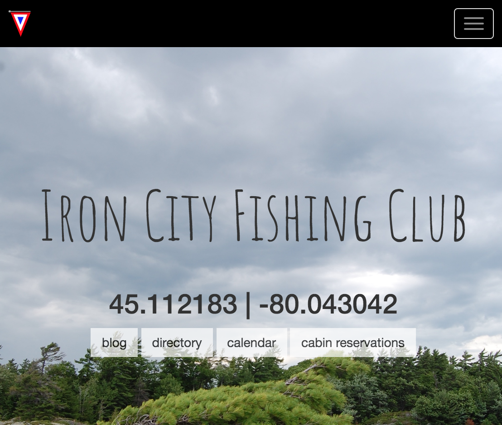
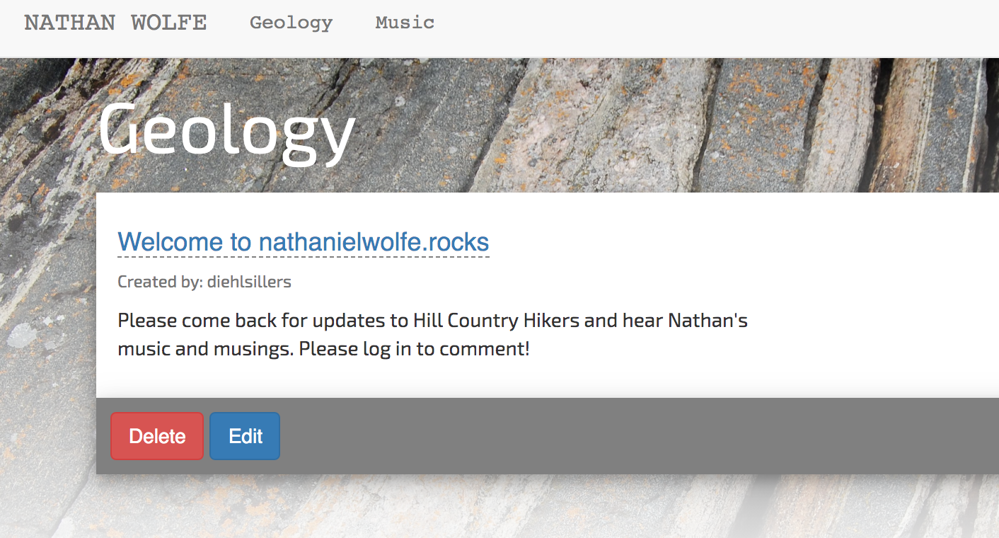
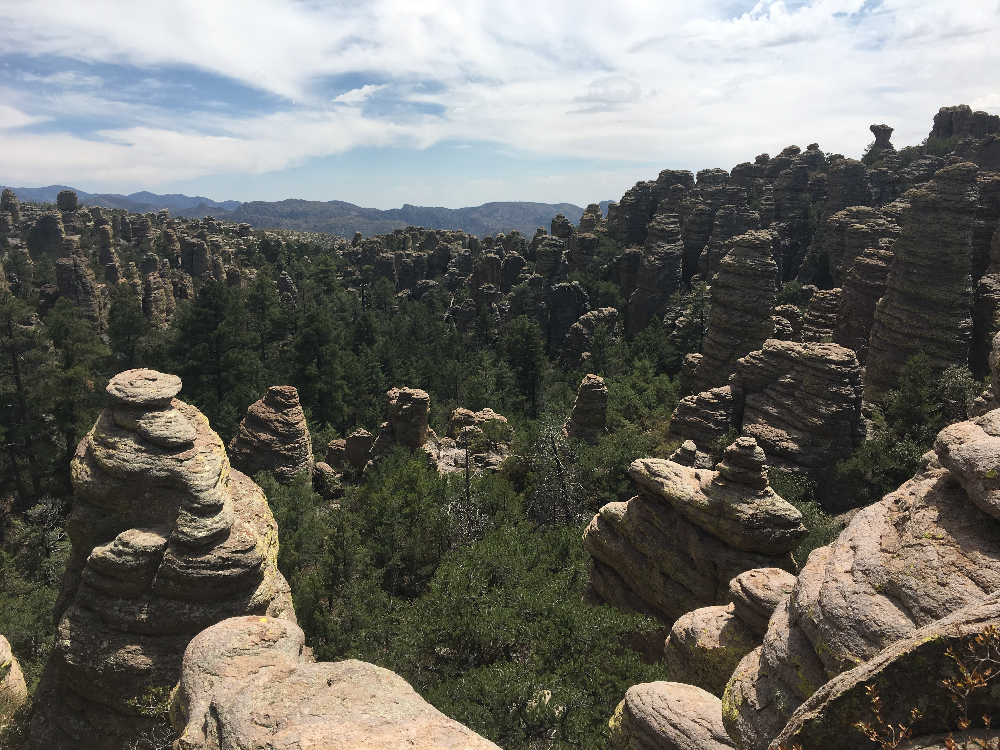
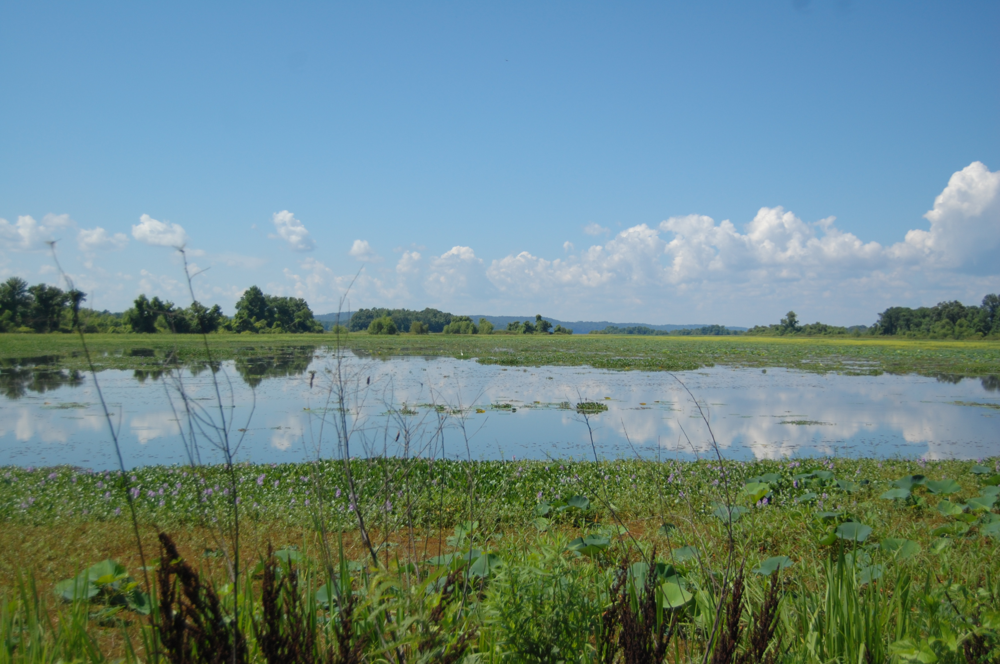
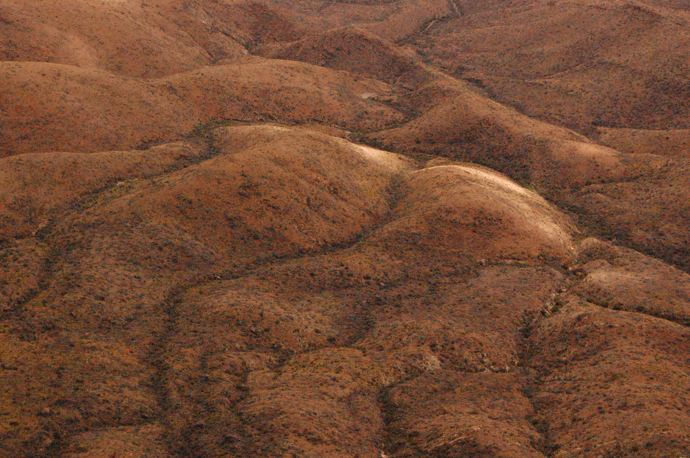

projects

NODRA
A website for a sailing club in Michigan. Allows users to update regata results and share contacts for race officials.
- Ruby on Rails
- Heroku, AWS S3, Postgres
- Bootstrap, ES6 Javascript

Iron City
A private fishing club in Ontario, Canada. Allows users to share cabin reservation dates, show pictures, and create blog posts.
- Ruby on Rails
- Heroku, AWS S3, Postgres
- Bootstrap, ES6 Javascript

Nathaniel Wolfe
A personal website for a geology colleague. Blog functionality so he can showcase music, geology posts, and career updates.
- Ruby on Rails
- Heroku, AWS S3, Postgres
- Bootstrap, ES6 Javascript
work history
| Position | Company | Dates | Location |
|---|---|---|---|
| GIS Technician | Apple, Inc via Apex | February, 2019 - Present | Austin, TX |
-
Responsibilites:
- Implemented multiple pilot projects focused on data integrity, quality assurance, and data validation.
- Responsible for digitizing and assembling new content from various sources, including databases, files/spreadsheets, and client resources.

| Position | Company | Dates | Location |
|---|---|---|---|
| Resource Management Assistant | National Park Service | June, 2018 - December, 2018 | Southeast Arizona (Coronado National Memorial, Chricahua National Monument, Fort Bowie National Historic Site) |
-
Responsibilites:
- Implemented the pilot Unstable Slope Management Program (USMP) to document over 300 risky roadside and trailside geologic hazards. Presented USMP work to American and Mexican conservationists at bi- national conference in Elgin, Arizona.
- Led field work teams to find, document, and analyze more than 60 abandoned mines with regards to polyurethane foam contamination, water quality, microclimate analysis, and environmental due diligence.
- Edited and helped author Cave and Mine Management report, USMP report, and numerous grant proposals within federal guidelines.
- Served as GIS point of contact for every park discipline, led field teams for research site delimitation, maintained geodatabase administration, and developed SQL queries.

| Position | Company | Dates | Location |
|---|---|---|---|
| Refuge Managment Intern | U.S Fish & Wildlife Service | June, 2017 - July, 2017 | Eufuala, AL |
-
Responsibilites:
- Managed invasive loblolly pine growth using brush saws, clearing more than 20 acres over the course of the summer in order to control growth.
- Took control of Refuge GIS in order to redesign visitor service maps and refuge resource facility maps.

| Position | Company | Dates | Location |
|---|---|---|---|
| Bookkeeper | Iron City Fishing Club | June, 2016 - August, 2016 | Georgian Bay, ON |
-
Responsibilites:
- Processed and invoiced hundreds of individual reservation for camp members and their families. Helped members with any questions or billing concerns, developing close relationships with club members.
- Oversaw day-to-day camp budget, and analyzed credit/debit discrepencies. Delivered outgoing invoices for camp supplies.
- Managed a waitstaff of fourteen, and ensured staff corresponded with club expectations. Responsible for managing interpersonal conflicts within the staff, and monitoring staff behaviors before issues arose.

| Position | Company | Dates | Location |
|---|---|---|---|
| Geology Intern | AECOM | June, 2015 - August, 2015 | Austin, TX |
-
Responsibilites:
- Responsible for helping edit Quarterly Groundwater Monitoring Reports and compiling chemical analyses according to Texas Commission on Environmental Quality standard operating procedures.
- Performed on-site groundwater remediation at Laughlin AFB, Del Rio TX, and HuMar Chemicals, Palacios TX. Managed low flow groundwater monitoring and analysis equipment.
education
B.S Geology, GIS Minor, George Washington University
Graduated May, 2018
Field work in Iceland (University of Iceland) and West Virginia
Soil Science
Current Crustal Movements
Geophysics
Geography of Iceland
Civil & Environmental Engineering
Chemistry (I & II)
Physical Geology
Historical Geology
Oceanography
Mineralogy
Marine Geology
Cartography & GIS
Techniques of Spatial Analysis
Igneous & Metamorphic Petrology
Remote Sensing
Structural Geology
Sedimentology & Stratigraphy
GIS II
Digital Image Processing
Hydrogeology
Geological Field Methods